| Take | Hero at 1024, then renders at 128 / 64 / 48 / 32 / 16 css px (2× retina sources), plus the 16px squint magnified | Rubric | Verdict |
|---|---|---|---|
| A · icon.svghand-authored layered SVG, build_icon.py — SHIPS |
 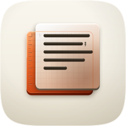 |
11 / 12 | Passes all four non-negotiables on real renders: exact family squircle clip with no baked corner or shadow, focal bounding union at 60.5% tile width, silhouette cleanly readable as stacked offset planes, and exceptional 16px squint survival (in-mask 16px luminance spread 0.2481 against marketplace median 0.169). Authored overlap demonstrates Tahoe tell 5 (ember rule ticks and calibration grid clearly visible through the frosted glass sheet). Four named layers (#bg, #mid, #fg, #highlight) ensure 1:1 Icon Composer readiness and variant robustness (#10). Luke's signature semicolon mark is embossed crisply at the end of line 2. Loses #7 on the lit top edge of the frosted sheet where highlight reaches 2.3:1 against porcelain. |
| B · icon-engineB-arrow-466c65.svgArrow 1.1 vector take |
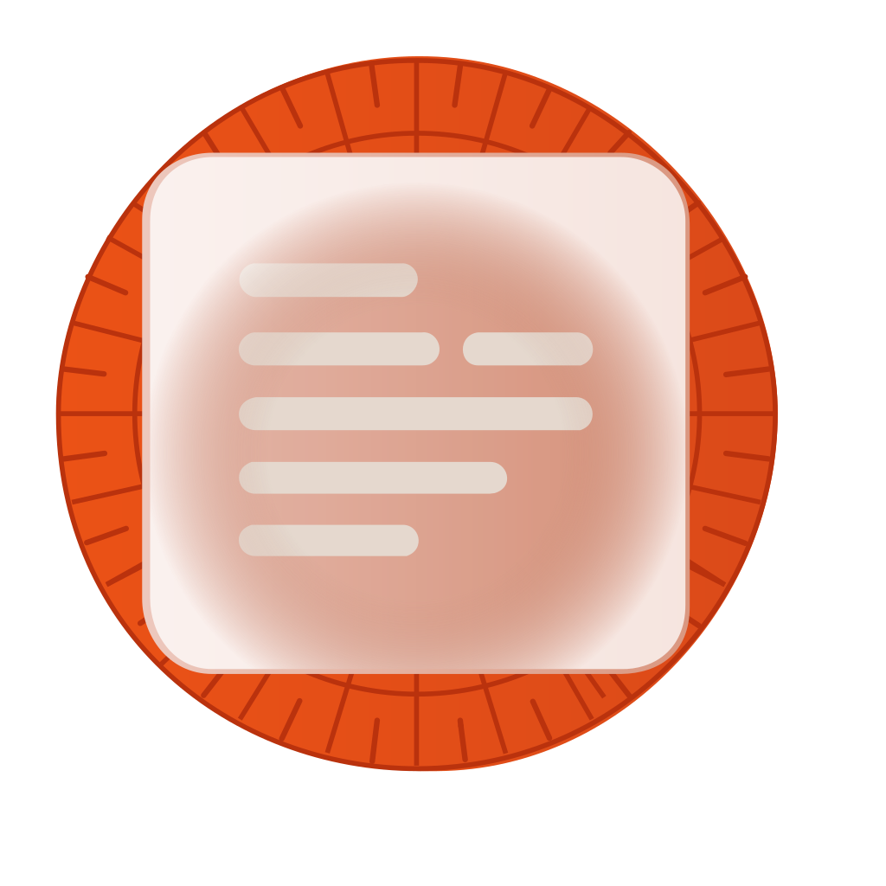 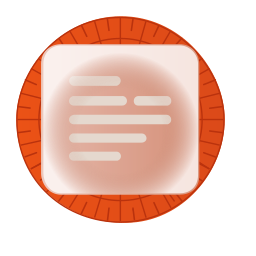 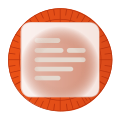 |
6 / 12 | Hard-fails #1 by drawing its own inner rounded-square boundary inside the superellipse canvas, and #2 by floating inset. Fails #6 by splashing warm orange across 30.6% of the tile instead of reserving the accent for the focal measuring plane. Fails #9 on era (flat 2D vector graphic with zero gel/glass depth or cushion tile), #10 on variant robustness (single flat layer), and #4 as the thin orange outer frame and interior lines blur into a low-contrast wash below 48px. Confirmed the left-aligned ragged-right prose layout rhythm. |
| C1 · icon-engineC-69eefc-masked.pngGemini 3 Pro, corpus-referenced — the material target |
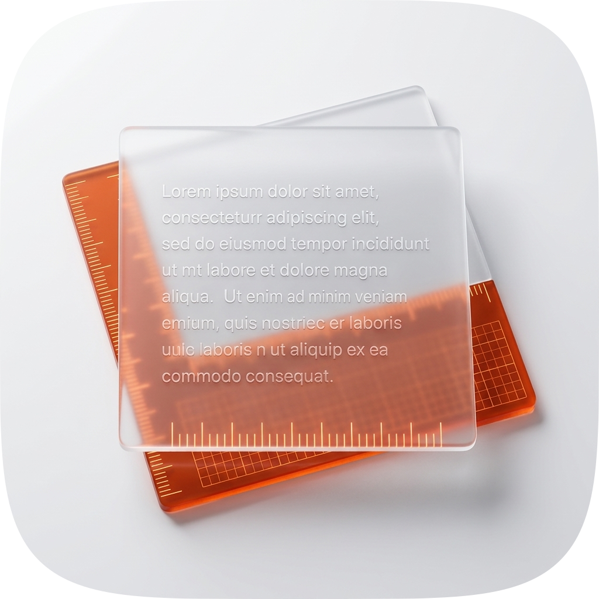 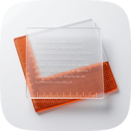 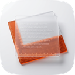 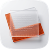 |
10 / 12 | Won the material judgment and served as the reference target for volumetric translucency and through-read physics. Demonstrates rich frosted glass transmission where the underlying ember rule graduations shine through the upper sheet. Fails #10 as a baked flat raster that cannot decompose for system appearance modes. Fails #6 on accent restraint (14.5% warm-saturated share compared to 3.9% in the master). Master salvaged its through-glass transmission physics and perimeter bevel lighting. |
| C2 · icon-engineC-778ac2-2-masked.pngGemini 3 Pro, second take |
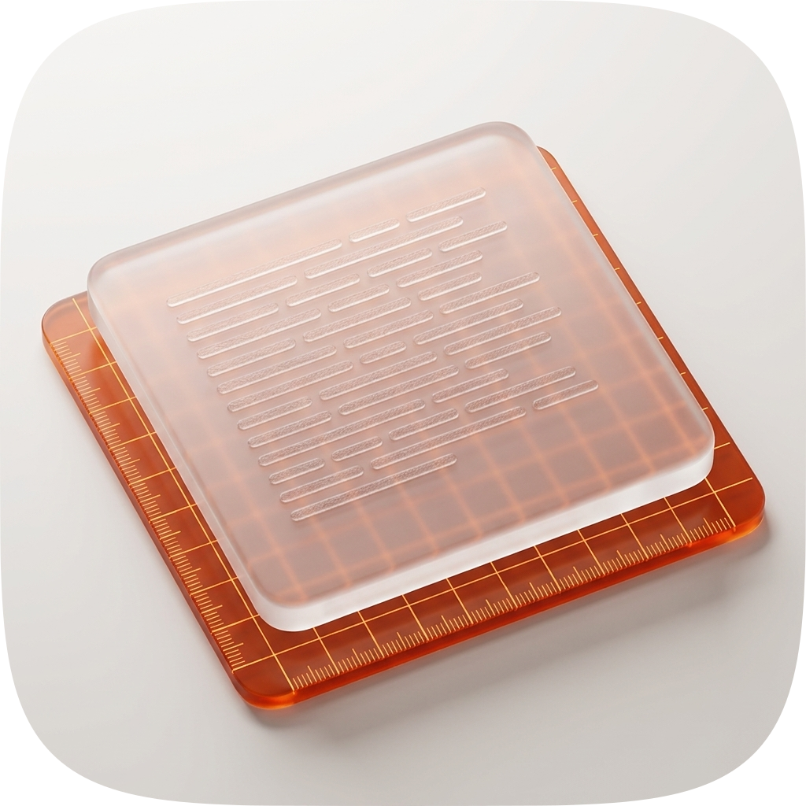 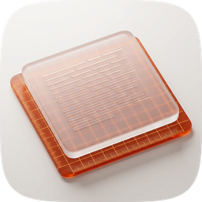 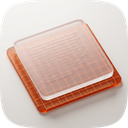 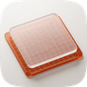 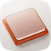 |
9 / 12 | Renders an ember calibration mat under a frosted card, but the lower plane extends under the whole tile, reducing figure-ground contrast and turning the measure into a backdrop texture rather than a distinct plane. Fails #10 (flat raster), #3 (diffuse silhouette when filled black), and #4 (grid noise degrades small-size clarity). |
| C3 · icon-engineC-gpt-18fd60-masked.pngGPT Image 2, corpus-steered |
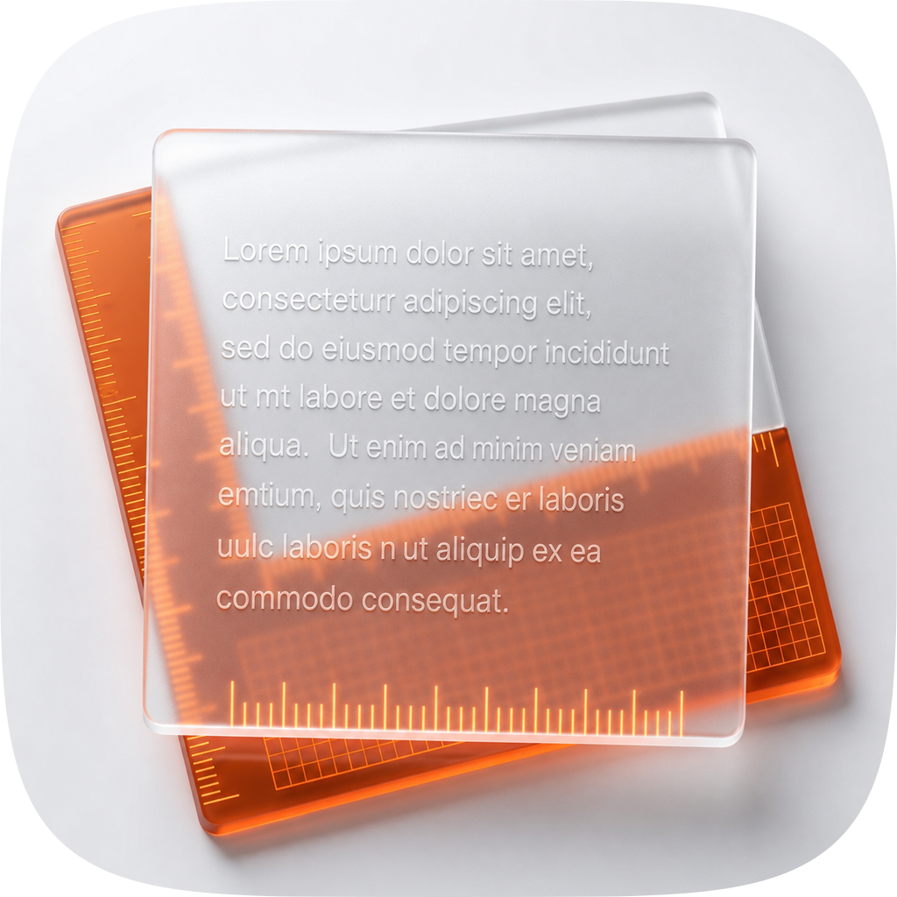 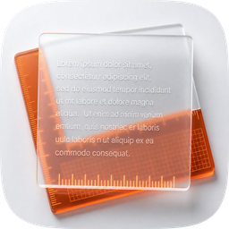 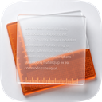 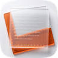 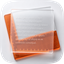 |
9 / 12 | Renders a separate wooden/amber ruler beside an opaque white card. Loses the core concept's stacked plane through-read: the ruler lies adjacent rather than underneath, failing the "Voice over Craft" argument. Fails #10 (flat raster) and #6 (22.2% warm-saturated share). |